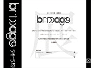
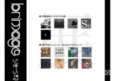
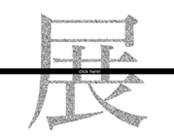

Portfolio * brighter and brighter
 画像展「brimage」webサイト
画像展「brimage」webサイト
>> このサイトへ行く
- ・制作期間
- 2010年4月上旬〜4月下旬
- ・使用ツール
- Illustrator / Flash / Dreamweaver
- ・コンセプト
- 「展示会」のようなwebサイト
- ・備考
- 単独制作
2010年5月10日から23日にかけて、九州大学芸術工学部画像設計学科3年生の有志で、九州大学サテライトルネットにて開催した展示会「brimage」のwebサイトです。
トップページは、サイトの全容が一目でわかるようにしました。各コンテンツ部分をクリックすると、画面がズームアップされ、そのコンテンツを見ることができます。 この「パッと全体を見て、それから細部に注目していく」という作りは「展示会」をイメージしています。
また、展示会会場にて発揮されるメンバーそれぞれの個性に注目してもらいたいという思いから、webサイトは白と黒を基調にしました。コンテンツは、トップ・展示会概要・作品紹介・メンバー紹介・アクセスマップの5つです。
  